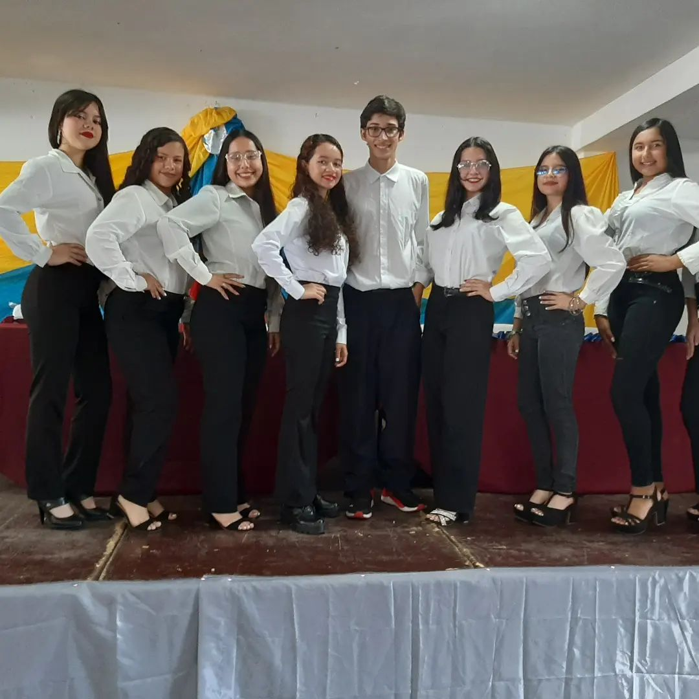
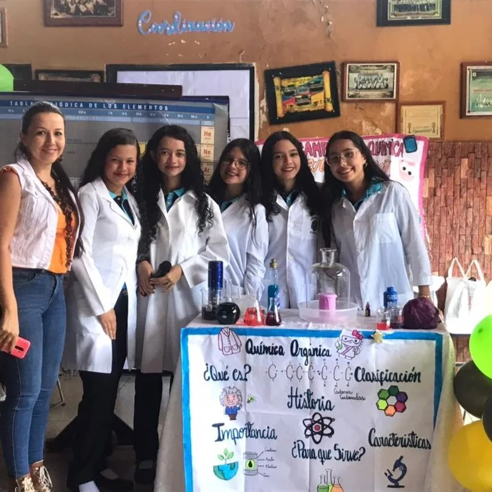
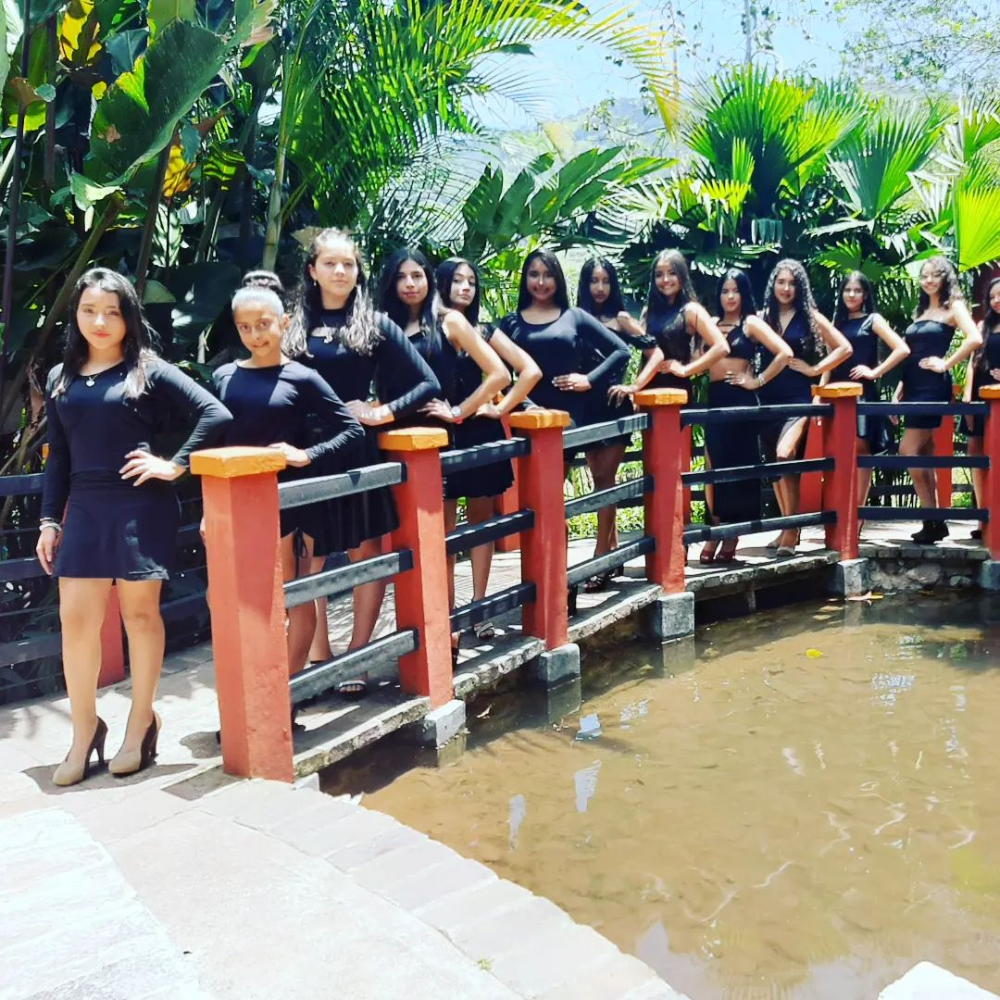

“Los maestros inspiran, entretienen y acabas aprendiendo mucho de ellos aunque no te des cuenta.” Nichlas Spears



A continuacion tendras informacion de El liceo nacional Ildefonso Vasquez Bravo, uno de los mas populares en el municipio andres bello
Visión
El LICEO NACIONAL ILDEFONSO VÁSQUEZ BRAVO tiene como visión alcanzar el máximo nivel de Formación y Felicidad de todos los actores del ámbito educativo, basado en una Educación en Valores y Principios Democráticos, participando conjuntamente por un firme propósito institucional: Educar en, por y para la vida. Garantizar el derecho pleno a una Educación Integral, Permanente, Continua y de Calidad para todas y todos con equidad de género en igualdad de condiciones y oportunidades, derechos y deberes. Egresar Bachilleres en Educación Media General con un perfil Humanista, Solidario, Reflexivo, Autocrítico y Capaz de asumir su Rol Ciudadano.
Adecuar de manera efectiva y progresiva todas las líneas político-educativas emanadas del Ministerio del Poder Popular para la Educación, como ente rector a nivel nacional en cada uno de sus espacios, consolidado el proceso de transformación curricular con el firme objetivo de establecer pautas pedagógicas administrativas acordes a cada realidad y contexto